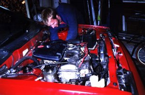

Zen and the art of motorcar maintenance
At least it wasn’t on the way to our holiday destination. But even on the trip back from a nice, two-week Christmas holiday, it’s never the nicest thing in the world to blow your gasket. Your car’s head gasket.
We’d known when we bought the car that its engine was on the way out. In fact, I managed to weasel the seller down from $1400 to $1000 because of it. Poor old Morris – how disloyal of me! – sold for a grand, so this car wasn’t allowed to cost much more than that. But you get what you pay for.
I paid for what I got, too. The cure, they said, was complete heart surgery: “You’ll need to replace the engine.” So after a $350 tow-truck fee and a $400 second-hand engine, little did I think I’d be spending the next week of evenings under the bonnet in oily overalls.

The Cressy boys (yes, same ones that starred in last issue’s Wheels column) gave me a big head start. Here I was, not too many moons after discovering how to change the oil, learning how to change an engine.
To say it took longer than we thought would be understatement. One evening soon turned into two, and two turned into seven. On the plus side, I actually gained a fair bit of mechanical confidence, because the technical aspect isn’t the hard part. In short, you pull all the pipes and wires off the old engine, pull it out and put the new one in, then replace the pipes and wires and do up the bolts. You’re away.
But in practice, man! First problem: an engine weighs a kilo or two. You nicely undo all the bolts, but your “fancy lifting gear” is limited to some homely ropes and the wooden cross-beams that support the garage roof. Then there’s the question of whether to lift or to drop the engine out …
Well, this story too has an end. Engine back in, radiator back on, tense moment as I turn the key – and it purred!
Poured, I mean. Yes, this new engine’s water pump leaked. Drat! The $80 for a new one was the easy part. Would we have to take out the whole engine again to install it? I was close to giving up, but I rang the car-wrecker, and he merely said, “In most cars you can replace the water pump without taking out the engine.”
In our Nissan Sentra you could, too, but just. Replacing this one part was one of the biggest ordeals (as I remember it). One of the pump’s bolts was almost inaccessible – you had about three millimeters to get your spanner in there. One of us held the pump by awkwardly reaching over various pipes and pulleys, trying to keep our arms out of the way of the guy doing up the bolts. He would be trying to use a combination of four or five different spanners and socket sets to reach in there, doing maybe a quarter of a turn at a time.
Finally, finally it was done. It really purred this time (at least to our tired, accepting ears). All that said, it recommend everyone doing it at least once. If I can change an engine, I’m thinking, I’ll be really good at changing the oil.